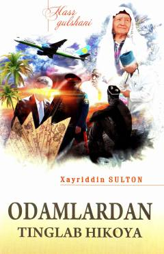

OTHayotiy voqealar va insoniy taqdirlar aks etgan o'ttiz bitta hikoyadan iborat to'plam.
Ushbu to'plam taniqli adib Xayriddin Sultonning o'ttiz bitta yangi hikoyasini o'z ichiga oladi. Muallif asarlardagi voqealarni hayotiy kuzatishlar va odamlardan eshitgan hikoyalar asosida qalamga olgan bo'lib, ularda inson taqdiri, quvonch va qayg'ulari badiiy ifodalangan.